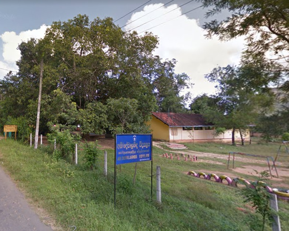
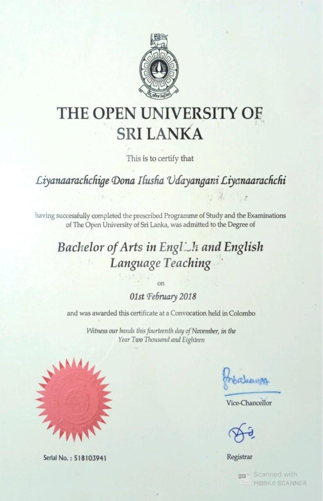

I am Ilusha Liyanaarachchi, an ESL (English as a Second Language) teacher at
WP/HR/Prajapathi Balika Vidyalaya in Horana, Sri Lanka. Holding a Bachelor of Arts
degree in English Language, I combine strong academic credentials with a passion for
teaching to create engaging learning experiences.
In my role, I focus on developing students' English proficiency through interactive
teaching methods that address all language skills - reading, writing, speaking, and
listening. I believe in creating a supportive environment where students can build their
confidence and develop a genuine interest in English language learning.
phone
+9477 4047320
email
ilu88senu@gmail.com
education
2014 - 2018
bachelor of Art in English
The Open university Of Sri Lanka
A complete degree that emphasizes literature, linguistics, and advanced English
language studies. I was well-prepared for my position as an ESL teacher by this
program, which gave me extensive understanding of academic writing, English
grammar, phonetics, and teaching strategies.
2006 - 2008
National Diploma in Teaching
Pasdunrata National College of Education
Kalutara, Sri Lanka
Duis aute irure dolor in reprehenderit in vol patate velit esse cillum dolore eu
fugiat nulla pari. Excepteur sint occana inna tecat cupidatat non proident.
experience
2021 - Present
ESL Teacher
WP/HR/Prajapathi Balika Vidyalaya
Horana, Sri Lanka
Teaching English Language and English Literature for Secondary and
Junior Secondary classes.
2012 - 2021
ESL Teacher
WP/HR/Sumanajothi Primary School
Ingiriya, Sri Lanka
Teaching English Language for primary classes.
2012 - 2021
ESL Teacher
2009 - 2012
ESL Teacher
AM/Devalahinda Vidyalaya
Ampara,Sri Lanka
Teaching English Language for Primary and Junior Secondary classes.
2008 - 2009
ESL Teacher Trainee
WP/HR/Sripalee College
Horana,Sri Lanka
Teaching English for Primary and Junior secondary Classes and
Developing Teacher Professional Skills as a Trainee
2008 - 2009
ESL Teacher Trainee
Artifacts
National Diploma in Teaching English
This logo represents Pasdunrata National college of Education, Kalutara, Sri
Lanka, the place where I took the first step of my teaching journey. Until I
entered the gates of this place, I had no clear idea of what it really means to
be a teacher...
This logo represents Pasdunrata National college of Education, Kalutara, Sri
Lanka, the place where I took the first step of my teaching journey. Until I
entered the gates of this place, I had no clear idea of what it really means to
be a teacher. During the three years of training here, I could expand my
pedagogical skills and instructional strategies. Through this programme I gained
practical knowledge about lesson planning, classroom management, assessment
designing, and child psychology as well. Most importantly, it was during this
programme that I got the opportunity to go to a school as a teacher for the
first time in my life. That was one of the most fascinating experiences that I
ever had. During the block teaching sessions and intern teacher training period
I could widen the horizons my of teaching career. I was trained under the
guidance of more experienced and mature teachers during my internship. Their
guidance and support were invaluable. During the college training, except
academic excellence I was also exposed to co-curricular and extracurricular
activities like sports meet, drama competitions, guiding and scouting, karate,
and many more to equip me with necessary competencies to be a competent teacher
who is equally capable of imparting knowledge and forming wholesome individuals
for a better society. After three years of training, I was awarded the
certificate of The National Diploma of Teaching English. This qualification
opened the gates for me to be a part of English language teaching pedagogy and
be a competent teacher which I consider as an invaluable achievement.

First Appointment
This is the first school I worked at after been officially appointed as a
teacher. Despite having the training for three years in the college as a teacher
trainee, I still felt nervous when I entered here as a teacher for the first
day. But I gradually...
This is the first school I worked at after been officially appointed as a
teacher. Despite having the training for three years in the college as a teacher
trainee, I still felt nervous when I entered here as a teacher for the first
day. But I gradually started making myself more competent and confident. Located
in a very rural area of the country, the school did not have many facilities.
Hence, it was a challenge to be a teacher there. The students were from
economically downtrodden families. Their main concern was surviving rather than
learning. But I was not disheartened. I understood their needs, desires,
problems and conditions. I made myself a better teacher, supporter, mentor and a
best friend for them. I changed myself. The most important thing I learnt during
this period is that what matters most is humanity, resilience, fellow feeling
and compassion. After working here for about three years I understood that I was
a new person. I understood that teaching is not mere imparting knowledge and
supporting students to pass examinations. It has a deeper meaning connected to
the core of the heart of a human being.

BA in English
This certificate denotes the successful completion of my Bachelor of Arts Degree
in English as a student in The Open University of Sri Lanka. Through this
programme I could shape myself into a better version of me as an ESL teacher...
This certificate denotes the successful completion of my Bachelor of Arts Degree
in English as a student in The Open University of Sri Lanka. Through this
programme I could shape myself into a better version of me as an ESL teacher. I
developed strong foundation for English linguistics, literature and critical
analysis during this programme along with exposure to practical arena of
teaching learning process. My studies equipped me with deep understanding about
language structure and usage, enhancing my ability to engage effectively in
teaching, assessment designing and classroom management. During this course, I
got an opportunity to sharpen the knowledge, skills and competencies I gained
during my training as a teacher in the college. As a part of my degree, I
conducted a research study which helped me to enhance my critical thinking
skills, data analysis, and academic writing skills. During the programme and
after the programme I felt that I have started to belong to a wider world where
everything about teaching is so amazing and special.
Teaching Philosophy
My teaching context is a government Girls' school in a suburb area in Sri Lanka. There are
about 1500 students in the school and grades from grade 1 to 13. The school has a bilingual
section (the language of instruction for 6 main subjects is English) too. Normal daily
instruction in the school is done in Sinhala. For example, the morning assembly is conducted
in Sinhala. The English language proficiency of most of the students is either average or
bellow average level while some students are above average level. Most of the students at
the school are from either middle class or lower middle-class families from either sub urb
or rural areas. Therefore, their exposure to target language is mostly limited to school
hours...
Completing Post Graduate Diploma has been a challenging and transformative experience for
me. It contributed to both my professional and personal growth as a teacher.
The programme offered me an opportunity to deepen my subject knowledge and understanding
of theoretical aspects of second language teaching and learning. The study...
Completing Post Graduate Diploma has been a challenging and transformative experience for
me. It contributed to both my professional and personal growth as a teacher.
The programme offered me an opportunity to deepen my subject knowledge and understanding
of theoretical aspects of second language teaching and learning. The study of Educational
Psychology, Applied linguistics, Methodology in Language Teaching, Curriculum Design and
Material Development and Assessment and Evaluation equipped me with necessary skills for
language instructions as well as assessment designing and curriculum designing.
Further, the micro teaching sessions and teaching practicum supported me to enhance my
classroom performance as a teacher. The constructive comments given by both the lecturers
and
peers during micro teaching sessions encouraged me to develop my teaching skills more. The
teaching practicum allowed me to apply the theories I learnt during the course in the real
classroom context. It enhanced my teaching strategies and classroom management strategies,
and
it enabled me to plan lessons addressing different learner needs and interests. The
integration of
technology in lessons, new teaching methods and strategies and designing specific learning
objectives and creating authentic language acquisition for my learners were interesting. I
practically experienced how I gradually grew as a better teacher during each day of my
teaching
practicum. And the guidance given by the supervisor and constant monitoring and guidance by
the mentor were invaluable.
In addition to this, the course offered me an opportunity to think critically about my
teaching
style, methods and classroom management. constant guidance given by lecturers and
interaction
with peers made this possible. During this course I could broaden my knowledge about new
findings, discussions and debates about language teaching pedagogy by reading research
papers,
books, journals and other related articles. It opened a new world in front of me and made me
explore new knowledge.
Apart from this, the programme supported my personal growth too. It enhanced my tolerance,
resilience, dedication and determination. As the course started, I did not feel it as a
challenge but
in a month’s time I started to realize how challenging it was. Managing to study, completing
assignments and attending lectures amidst my busy schedule were almost hectic for me. But I
did
not give up. I convinced myself how strong I was. By facing this challenge, I was formed
into a
strong individual. The collaborative support of the peers too was always encouraging.
Overall, the Post Graduate Diploma in TESL was a crucial turning point of my professional
journey. It has not only equipped me with advanced knowledge and practical skills but also
with
a deeper passion for teaching molding me into a strong individual full of enthusiasm for
professional development and life- long education.